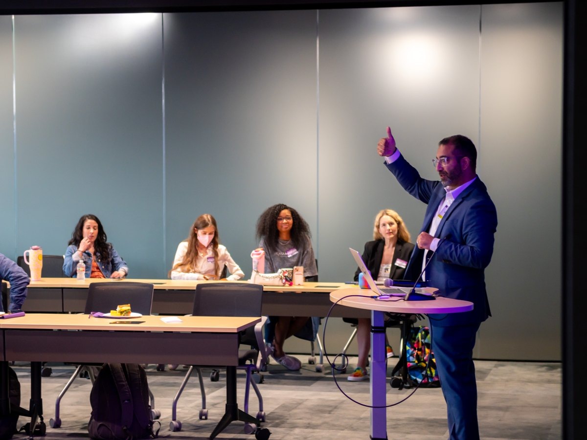
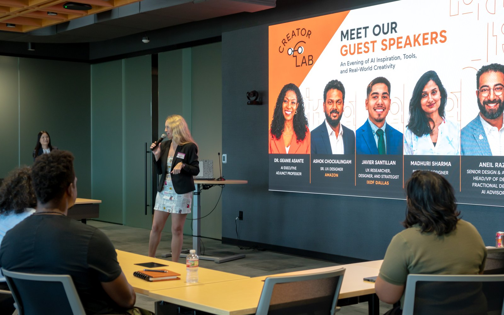

I'm a design and AI leader who's spent 15+ years turning fragmented, complex products into calm, human ones, and lately, designing and shipping an AI-native app solo. I speak to product, design, and leadership audiences who want AI to be useful, not bolted on.

Each talk flexes to a keynote, a fireside chat, or a hands-on workshop, and I tailor the examples to your audience. Here's what people walk away with.
Where AI actually belongs in a product, and a framework your team can design against instead of bolting features onto a roadmap.
How AI coding agents let one person take a real product from concept to the App Store: what changes, what doesn't, and what it means for how teams work.
Why reducing friction is the highest-leverage design skill, and how to build that discipline into a team instead of leaving it to heroics.
Most orgs over-invest in design too early or starve it too long. I help teams read their own design and research maturity, then pick the right level (from AI-assisted, to a fractional lead, to a full in-house function) and build it when they're actually ready.

Invited as a guest speaker for an evening built around AI in the creative process: how design leaders can move past the hype to tools and practices that hold up in real work. The kind of room I love: practitioners who want something they can use on Monday.
A selection of keynotes, panels, and workshops, from enterprise summits to the Dallas design community.
Speaking on how design leaders move past AI hype to tools and practices that hold up in real work.
One of the invited experts helping emerging designers navigate career questions and portfolio decisions.
Pairing with designers for direct, practical feedback and career mentorship.
How UX and product management can operate as one cohesive team: what to expect from one another, and the value each brings.
A sneak peek into the future Omnitracs One product line, and how channel partners could help shape the vision.
Giving emerging designers no-risk practice interviewing and real feedback on their work and résumé.
A practical panel on merging design into agile, distributed vs. centralized teams, and measuring UX success.
with Dashiel Hermann & Raymond Galang
Brainstorming techniques for generating ideas, and keeping momentum to shape many concepts from one.
with Arielle McMahon
A conversation with channel partners and an early look at the Omnitracs One product line.
Teaching Sketch shortcuts and file structure, and applying atomic design when building a style guide.
Using filmed field research to build radical empathy and turn findings into consensus among stakeholders.
A joint session with TIBCO on the problems designers face day to day, from career growth to cross-team friction.
Why a UI style guide speeds up front-end work and creates consistency from the end user's point of view.
Combining behavioral studies with data analytics (ride-alongs, usability testing, and more) to design better products.
A live UX design demo: improving an application with audience participation and feedback in real time.
How the UX team works directly with drivers and dispatchers to build relevant, impactful applications.
How to prep culture and leadership to embrace an innovation framework that actually drives results.
An open forum on how the development process works end to end, and how to identify new creatives for a team.
How to mentor creatives, map career paths, and build an environment and toolkit that cultivates success.
Facilitating Behance's global Portfolio Review Week, setting the tone and matching junior designers with senior mentors for actionable feedback.
Same substance, shaped to your event. Tell me the room and the goal, and I'll shape the talk to fit.
A 20–45 minute talk that sets the tone or sends the room out with a point of view and something to do about it.
A guided conversation: I'll bring the stories and the candor; you bring the questions your audience actually has.
Hands-on and practical. The audience leaves having done the thing, not just heard about it.
A clear, generous voice on a panel, moving the discussion forward instead of competing for airtime.
"He leads with solutions. Where others see roadblocks, Aneil sees the next move. He takes ambiguous problems, rallies the people around him, and drives toward outcomes that actually matter to the end user."
"What makes him truly exceptional is how he balances creative passion with a highly organized approach. He fosters an environment where people feel supported, inspired, and empowered to do their best work."
"Aneil is one of those dynamic creative leaders that lights up any room he walks into. If you need an energetic and charismatic speaker to help empower your organization, you need an Aneil."
"His presentations and engagements with my channel partners fostered a deep sense of teamwork and engagement. He has always been a sought-after contributor to partner conferences."
Conference, team offsite, podcast, or panel: if your audience cares about AI, design, and building things that actually ship, let's talk about what would land for them.